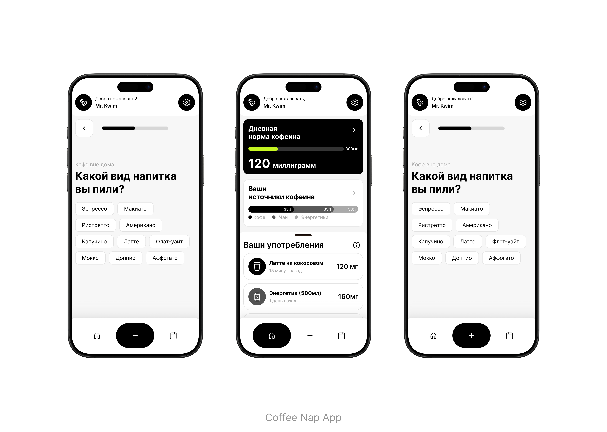

Coffee Nap is a mobile app concept designed to help users monitor and manage their daily caffeine intake. The idea behind the project was to create a simple tool that allows people to track what they drink throughout the day and better understand their caffeine consumption habits.
The interface focuses on making the logging process fast and intuitive. Users can quickly select the type of coffee or drink they consumed, while the application automatically tracks the amount of caffeine and visualizes daily intake progress.
The dashboard screen provides an overview of the user's daily caffeine limit, showing progress through clear visual indicators and simple statistics. This helps users stay aware of their consumption without overwhelming them with complex data.
The design follows a minimalist approach with a strong emphasis on readability, clear hierarchy, and comfortable interaction on mobile devices.
Role: UX/UI Design